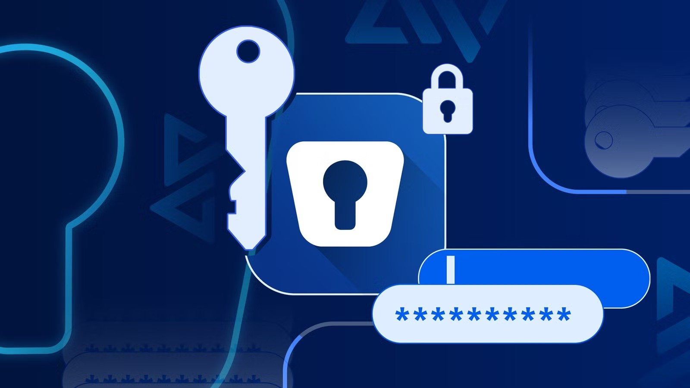
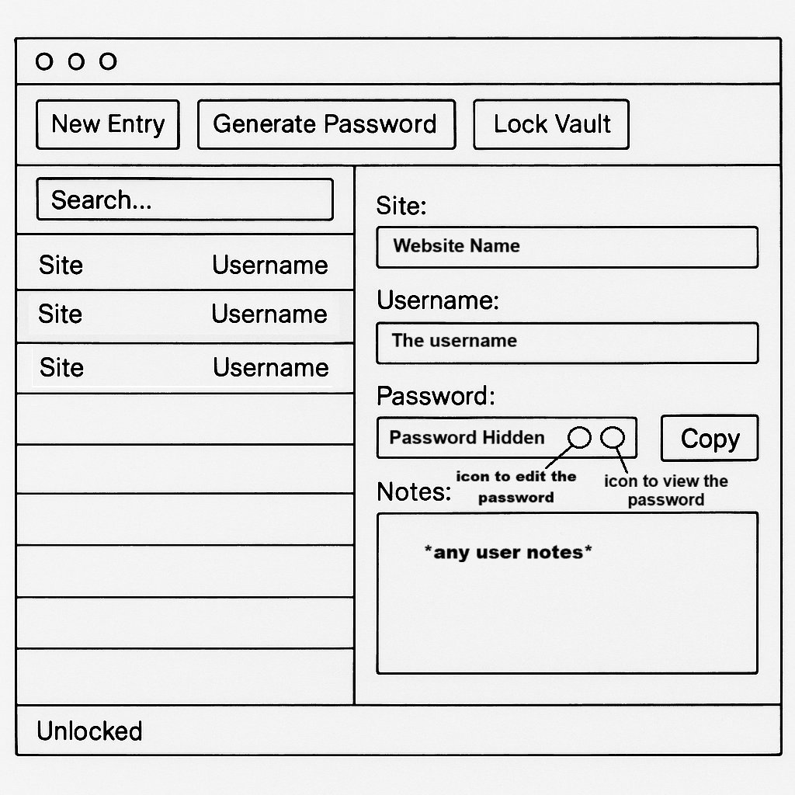
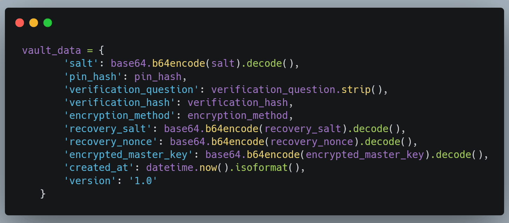
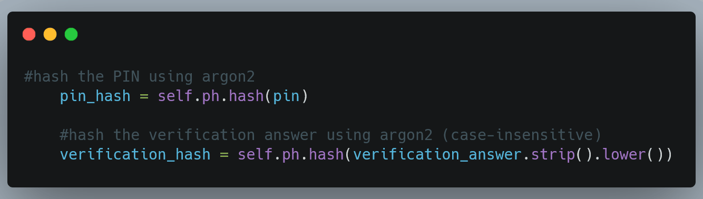
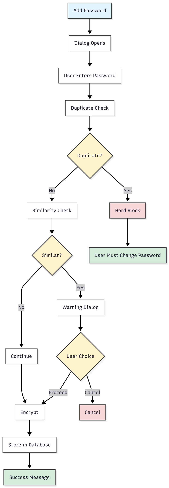

Case Study: MSc Dissertation
BUNKR: Offline Password Manager
A local-first, privacy-focused desktop password manager built entirely offline (no accounts, no cloud sync, no telemetry), designed and developed as my MSc dissertation project at the University of Liverpool.
Overview
Most popular password managers depend on the cloud for convenience, but that convenience comes at the cost of privacy and trust in a third party's servers. BUNKR was designed as the opposite: a password manager that works entirely offline, gives the user full ownership of their data, and relies on well-understood, industry-standard cryptography rather than a "trust us" model. The guiding design principle throughout the project was simple: "Security should rely on design, not on trust."
Every vault is protected by a master password (never stored anywhere), with a 6-digit PIN and a recovery question providing offline recovery gates that never bypass the master password for decryption. All encryption and decryption happens locally on-device. There is no network communication at any point in the application.
How It Works
The app follows a modular, four-layer architecture so each part of the system has a clearly separated responsibility:
- GUI Layer (PySide6): the main window, dialogs, dark-mode styling, and status bar.
- Vault Manager: encryption/decryption, key derivation, and vault lifecycle handling.
- Data Layer (SQLite): stores encrypted password blobs and performs CRUD operations.
- Utilities: password generator, clipboard auto-clear, settings manager, search, and duplicate/similarity detection.

Security & Cryptography
The core security design revolves around one idea: the master password is never stored anywhere. Instead, it's run through a key derivation function every time a vault is unlocked.
- Key derivation: PBKDF2-HMAC-SHA256 with 100,000 iterations and a unique 32-byte salt per vault, producing a 256-bit Data Encryption Key.
- Encryption: AES-GCM by default, with ChaCha20-Poly1305 and Fernet available as alternatives. All are authenticated ciphers, so tampering is detected instantly. Each vault can migrate between methods on demand.
- PIN & recovery hashing: Argon2id (memory-hard, GPU-resistant), used only for one-way verification, never for decryption.
- Hygiene features: hard-blocking of exact password reuse, near-duplicate detection via Levenshtein distance, clipboard auto-clear after 30 seconds, and idle auto-lock.


Password Hygiene in Action
Before any password is encrypted and stored, it passes through a duplicate and similarity check. Exact duplicates are hard-blocked outright; near-duplicates (≥80% similarity, via edit-distance) trigger a warning dialog that lets the user decide whether to proceed, balancing security guidance with user autonomy rather than forcing a decision on them.
